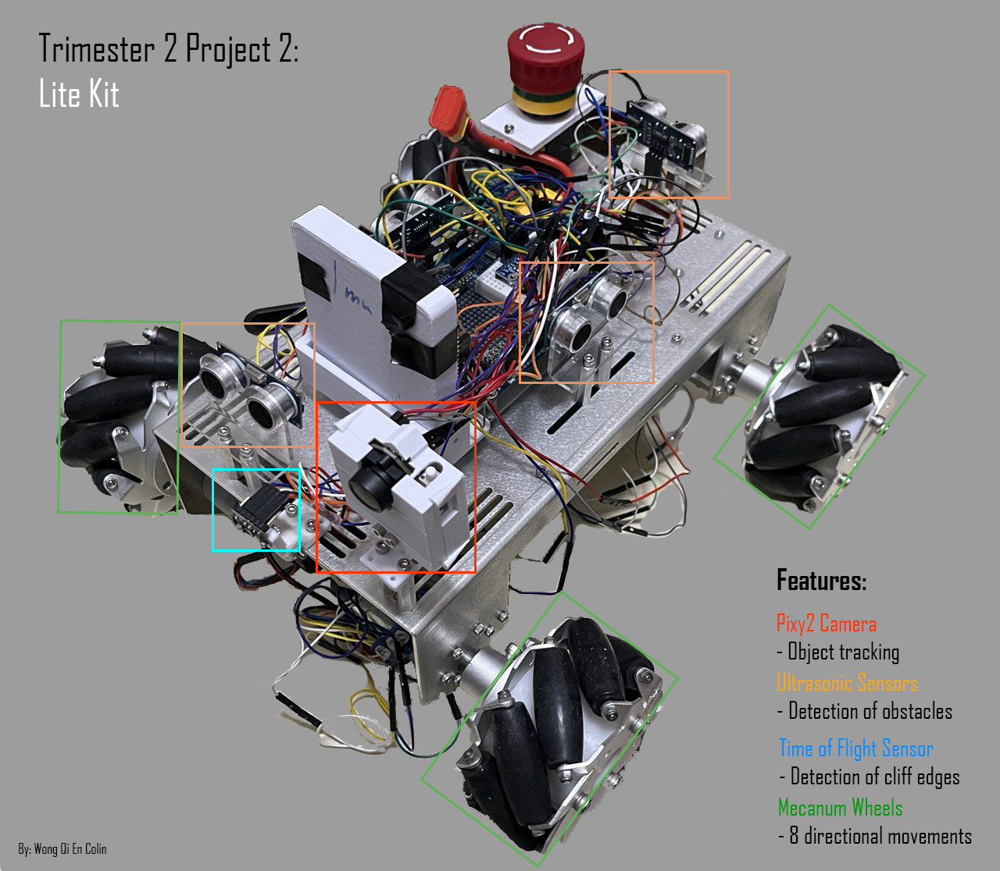
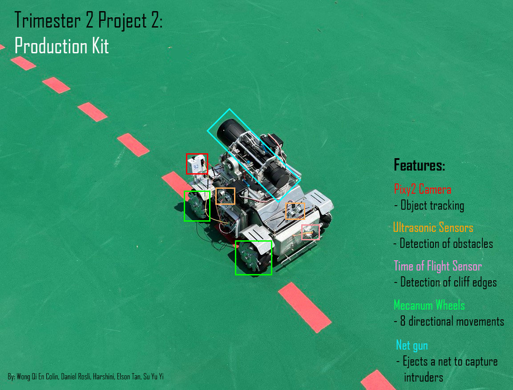

Lite kit
The lite kit was a solo endeavour, where certain features were required to be implemented as stated in the image. Object tracking: Algorithm built using STM32 software coded in C communicating via SPI with the PixyCam Obstacle detection: Usage of ultrasonic sensors Drop detection: Usage of Time-of-flight sensors Octa-directional movement: Usage of Mecanum wheels, algorithm coded in Parallax Propeller tool in C
Video of functioning Lite kit
Tested in my bedroom. As noticed in the video, the lit kit is able to 1. Detect object 2. Follow object 3. Move in 8 directions
The detection quality is highly dependent on the lighting condition of the room and settings of the PixyCam, it is crucial to adjust those settings depending on the surrounding environment before operation.
Production kit
The production kit was a team effort, where additional features were built-in on top of the lite kit's current features Armour plating: Additional suspension and metal guards for smoother operation Capture mechanism: A net gun can be ejected to capture detected intruders, to see it operate check out the video below